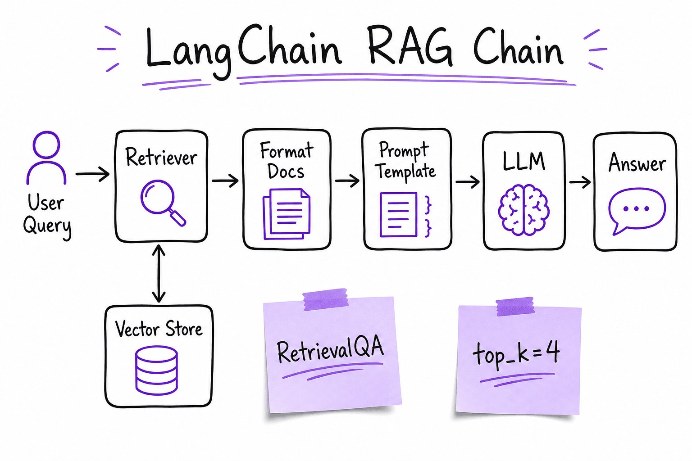
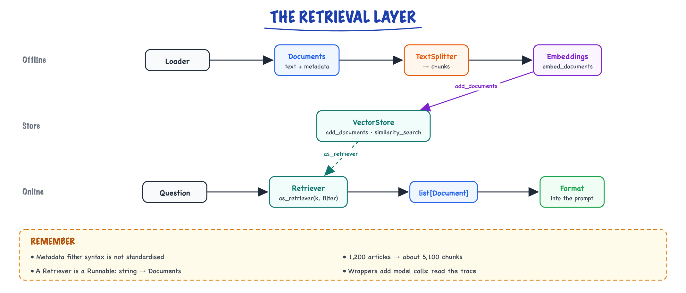

LangChain // Tech & tools
Chains, runnables, retrievers and the integrations layer.
01 — At a glance
Composable LLM framework: runnables (LCEL pipe), prompts, retrievers, tools, memory, and callbacks. The component layer most orchestrators (LangGraph, LlamaIndex integrations) build on.

LangChain stack: Prompt | ChatModel | OutputParser as LCEL chain; retriever feeds context from Vector search & databases; tools bound via bind_tools; callbacks → LangSmith traces.

A LangChain RAG chain: a retriever over the vector store, format the documents, fill the prompt template, call the LLM.
02 — New words
| Word | Meaning |
|---|---|
| Runnable | LangChain's single interface for "a step": anything with invoke, batch, stream and their async versions. Prompts, models, parsers, retrievers and your own functions are all Runnables. |
| LCEL | LangChain Expression Language: building a pipeline by joining Runnables with the | operator. It is ordinary Python operator overloading, not a separate language. |
| RunnableSequence | What a | b | c produces: a Runnable that feeds each step's output into the next step's input. |
| RunnableParallel | A Runnable that runs several branches on the same input and returns a dict of their outputs. A plain dict inside a chain is turned into one automatically. |
| RunnableLambda | Wraps an ordinary Python function so it can sit in a chain. Plain functions in a chain are wrapped automatically. |
| PromptValue | What a prompt template outputs: a filled-in prompt that can be read either as a list of chat messages or as one string. |
| Message types | Provider-neutral classes for chat turns: SystemMessage, HumanMessage, AIMessage (which can carry tool_calls) and ToolMessage. |
| Document | LangChain's unit of retrieved text: page_content (a string) plus a metadata dict (source, page, region, and so on). |
| Retriever | A Runnable that takes a query string and returns a list of Documents. A vector store's as_retriever() gives you one. |
| RunnableConfig | A dict passed alongside the input (callbacks, tags, metadata, max_concurrency, run name) that every nested step inherits. |
| Callback handler | An object notified when any step starts, streams a token, ends or errors. Tracing tools such as LangSmith are callback handlers. |
| Integration package | A separately installed package that implements the core interfaces for one provider, such as langchain-openai or a vector store package. |
The lesson
03 — The question
Every LLM application, once you remove the model call itself, is mostly glue: fill a prompt template, fetch some documents, format them, call a model, parse what comes back, retry when the provider times out, log everything, and do it again for the next user. LangChain is a library that standardises that glue. Its claim is that if every piece speaks one interface, you can swap providers, add streaming, batching, retries and tracing once, and compose pieces like Unix pipes.
Whether that claim holds for your project is the real question. Interviewers ask about LangChain in four ways:
- What is a Runnable, and what does
prompt | model | parseractually build and execute? - How does data flow through a retrieval chain: what type is the value at each step?
- What does the framework give you that thirty lines of your own Python would not (streaming, batching, retries, tracing), and what does it cost (abstraction depth, version churn)?
- When would you use LangChain, when LangGraph, and when nothing at all?
The running example for this lesson is one concrete app: the help-centre assistant for an online electronics shop. The knowledge base is 1,200 policy and FAQ articles, averaging about 1,500 tokens each. A customer in the US asks: "Can I return opened headphones after 20 days?" The assistant must retrieve the right policy, answer only from it, cite the source, and stream the answer into a chat widget. We will build this as a LangChain chain, follow the value through every step, and put latency and cost numbers on each hop.
04 — Step 1: the app without a framework
Start with what the code must do, in plain Python, so that every LangChain concept later has something concrete to replace.
- Retrieve: embed the question, search a vector store for the top \(k = 6\) chunks, filtered to
region = "US". - Format: join the chunks into one context string, each prefixed with its source file name so the model can cite it.
- Prompt: put the context into a system message and the question into a user message.
- Generate: send the messages to a chat model and receive a reply.
- Parse: pull the text out of the reply object.
Written directly, this is five function calls, perhaps thirty lines, and nothing about it is hard. The hard parts come later: streaming the answer token by token, running the pipeline over 1,200 articles with a concurrency limit, retrying on HTTP 429, falling back when a provider is down, and tracing which chunk the model saw when it answered wrongly. Each is a cross-cutting concern touching all five steps. LangChain bets that a uniform step interface makes them cheap to add.
05 — Step 2: one interface for every step
A Runnable is any object that implements one method, invoke(input, config), and inherits the rest from a base class:
| Method | Default behaviour if a step does not override it |
|---|---|
invoke(x) | Must be implemented: one input, one output. |
batch([x1, x2, ...]) | Calls invoke on each input in a thread pool, limited by max_concurrency. |
stream(x) | Calls invoke and yields the whole result as one chunk. |
ainvoke, abatch, astream | Async versions; by default they run the sync method in an executor. |
Components that can do better override the defaults. A chat model overrides stream to yield tokens as the provider sends them and ainvoke to use a real async HTTP client. A prompt template has nothing to stream, so it keeps the defaults.
Why one interface rather than different classes with different methods? Because the cross-cutting features are then written once, on the base class, and work for every component: .with_retry(), .with_fallbacks(), .batch(), tracing. The alternative, which older LangChain used, was a zoo of chain classes (LLMChain, RetrievalQA, ConversationalRetrievalChain) each with its own call conventions and hidden prompts. Those classes are now legacy; the Runnable interface replaced them because a uniform contract composes and a zoo does not.
06 — Step 3: what the pipe operator builds
prompt | model is Python's __or__ operator. LangChain defines it on Runnable to return a RunnableSequence holding both steps. Chaining more steps flattens into one sequence, so a | b | c | d is a single sequence of four steps, not nested pairs. Nothing runs when you build it: the chain is a data structure describing the pipeline. Work happens on invoke, which loops over the steps, passing each output to the next input.
Two automatic conversions ("coercions") make chains short to write:
- A plain function in a chain becomes a
RunnableLambda. - A dict in a chain becomes a
RunnableParallel: each value is run on the same input, and the outputs are collected into a dict under the same keys.
The help-centre chain is therefore:
RunnableSequence
|-- RunnableParallel input: "Can I return opened headphones after 20 days?"
| |-- context: retriever | format_docs -> "[returns.md] Opened audio products can be ..."
| '-- question: RunnablePassthrough -> "Can I return opened headphones after 20 days?"
|-- ChatPromptTemplate input: {"context": str, "question": str}
| output: ChatPromptValue (system + human message)
|-- ChatModel output: AIMessage(content="Yes. Opened audio ...")
'-- StrOutputParser output: "Yes. Opened audio ..."
Follow the types, because that is where most chain bugs live. The question enters as a string. The parallel step turns it into a dict with two keys. The prompt template requires exactly the keys its template mentions ({context} and {question}); a missing key is a KeyError at run time, not at build time. The template outputs a PromptValue, which a chat model reads as messages. The model outputs an AIMessage, an object with content, metadata such as token usage, and possibly tool calls. The parser reduces it to a plain string.
RunnablePassthrough passes its input through unchanged, which is how the question reaches the template beside the context; RunnablePassthrough.assign(docs=...) keeps the input dict and adds a key, the usual way to carry documents forward for citations. Parallel branches really run concurrently (a thread pool, or asyncio.gather in async), so two retrievers cost the slower one's latency, not the sum.
07 — Step 4: streaming through a chain
Streaming is the feature most often broken by accident, so it is worth knowing the mechanism. Each Runnable can implement transform: take an iterator of input chunks and yield output chunks. When you call chain.stream(x), the sequence connects the steps' transforms so chunks flow through as they are produced.
- The chat model yields one
AIMessageChunkper token or small group of tokens. StrOutputParserimplementstransform, so each message chunk becomes a string chunk immediately.- A plain
RunnableLambdadoes not know how to process partial input. It waits for the whole input, then runs once. Placed after the model, it turns the stream into one chunk at the end.
Put numbers on it. Suppose the query embedding takes 50 ms, the vector search 30 ms, the model's time to first token 500 ms, and the 150-token answer arrives at 60 tokens per second (2.5 s). With a streaming-safe chain, the first words appear after \(0.05 + 0.03 + 0.5 = 0.58\) s. Add a non-streaming post-processing function after the model ("strip markdown", say) and the user stares at a spinner for \(0.58 + 2.5 \approx 3.1\) s before seeing anything. Same total time, a much worse product.
The fixes: do custom processing before the model, write it as a generator over chunks (LangChain treats that as a streaming transform), or use astream_events, which emits events from inside the chain (each token, each retriever result) whatever later steps do. That is how chat UIs show "searching..." and then the streamed answer.
08 — Step 5: config, callbacks and tracing
Every invoke accepts a second argument, a RunnableConfig dict. The sequence passes it to each step, and each step passes it to its children, so a setting given at the top reaches the bottom:
callbacks: handlers notified on every start, token, end and error of every nested step.tagsandmetadata: labels attached to every event (user ID, tenant, experiment arm).run_name: a readable name for the trace.max_concurrency: the cap used bybatchand parallel branches.configurable: values for fields you marked as configurable, such as which model or which temperature to use for this call.
Callbacks are how tracing works. The callback manager creates a run for the sequence and child runs for each nested step, each with timings, inputs, outputs and errors; a tracing backend (LangSmith, or an OpenTelemetry tool) draws the tree. For a wrong help-centre answer, the trace shows the six chunks retrieved and the exact prompt sent, usually enough to tell a retrieval failure from a generation failure. See Observability.
The machinery costs little. On a laptop, a five-step chain of do-nothing functions took about 1 to 2 ms per call through LangChain against under a microsecond as plain calls (measured on an older langchain-core; order of magnitude only). Against a 3-second model call that is under 0.1%. Overhead is not the reason to avoid LangChain; debuggability and churn (Step 9) are.
09 — Step 6: models and messages, the provider-neutral layer
The integration layer is what most teams actually use LangChain for. A chat model class (one per provider, in packages such as langchain-openai or langchain-anthropic) implements the Runnable interface and translates between LangChain's message types and the provider's wire format. Your code builds a list of SystemMessage, HumanMessage, AIMessage and ToolMessage objects; the integration turns them into the right JSON and turns the response back into an AIMessage with standardised fields for content, token usage and tool calls.
Tool binding is the clearest example of what the translation buys. You decorate a function:
@tool def check_order(order_id: str, include_items: bool = False) -> str: """Look up an order's purchase date and status."""
LangChain reads the signature and docstring and produces a JSON schema: a function named check_order, a required string order_id, an optional boolean include_items defaulting to false. model.bind_tools([check_order]) returns a new Runnable that sends this schema with every request in whatever shape that provider expects. The reply's tool_calls come back as a provider-neutral list of {"name", "args", "id"}. Executing the tool and looping until the model stops asking is not LangChain's job any more; that loop belongs to LangGraph or your own code (see Tool calling).
model.with_structured_output(Schema) does the same trick for typed answers: it uses the provider's native structured-output or tool-calling mode to force the reply into a Pydantic model or JSON schema, and parses it for you.
The limit of the neutral layer: it covers what providers share. Provider-specific features (a caching control, a reasoning setting) arrive late or as special-case arguments. "Swap providers in one line" holds for the basic chat call, and often fails for the features that made you choose a provider.
10 — Step 7: the retrieval layer
Retrieval in LangChain is a set of small interfaces wired in a fixed order:

Offline, a loader, a text splitter and an embeddings class fill a vector store; online, a retriever made from that store turns a question into Documents that are formatted into the prompt.
- A Document is just text plus a metadata dict. Metadata is what you filter on and cite from, so decide it at ingestion: source path, section, region, product category, last-updated date.
- A text splitter cuts documents into chunks. For the shop: 1,200 articles of about 1,500 tokens, split into 400-token chunks with 50 tokens of overlap (a new chunk every 350 tokens), gives roughly \(1{,}200 \times 1{,}500 / 350 \approx 5{,}100\) chunks. How to choose these numbers is the subject of Chunking.
- An Embeddings class wraps an embedding model:
embed_documentsfor many texts,embed_queryfor one. - A VectorStore class wraps a database (Chroma, pgvector, Pinecone and dozens more) behind
add_documentsandsimilarity_search. - A Retriever is a Runnable from a query string to a list of Documents.
as_retriever(search_kwargs={"k": 6, "filter": {"region": "US"}})is the usual way to get one.
Here is the catch that matters in practice. The VectorStore interface is a lowest common denominator, and the most important part, the metadata filter, is not standardised: its syntax is whatever the underlying database accepts. A filter written for Chroma does not run against Pinecone unchanged. The abstraction lets you swap stores in a prototype; in production you will touch the filter code, the index settings and the ingestion job anyway. See Vector search for what the store is doing underneath.
Retriever wrappers (multi-query rewriting, keyword-plus-vector ensembles, reranking or compression) are themselves string-to-documents Runnables, so the chain around them does not change. That is the payoff of the uniform interface, and also how a chain quietly gains extra model calls: read the trace.
11 — Step 8: reliability and throughput helpers
Because they live on the base class, these work on any step, including a whole chain:
.with_retry(stop_after_attempt=3)re-invokes on exceptions, with exponential backoff and jitter by default. If a provider fails 2% of calls transiently and failures were independent, three attempts would leave \(0.02^3 = 8 \times 10^{-6}\) failing. They are not independent during an outage, which is why you also need the next item..with_fallbacks([backup])tries the backup Runnable when the primary raises. Typical use: a second provider, or a smaller model, for the same prompt. Fallbacks see the same input, so the prompt must suit both models..batch(inputs, config={"max_concurrency": 8})runs many inputs through a thread pool. Overnight, the shop regenerates a one-line summary for each of its 1,200 articles. At 1.5 s per model call, sequential processing takes \(1{,}200 \times 1.5 = 1{,}800\) s; with 8 in flight it takes about \(1{,}800 / 8 = 225\) s, as long as your rate limit allows 8 concurrent requests.
Where retries go matters. Wrap the model step, not the whole chain: retrying the whole chain re-runs retrieval and re-embeds the query for no reason. Never retry a step with side effects (sending an email, writing a ticket) unless it is idempotent. See Reliability engineering for the full pattern.
12 — Step 9: the package layout and the churn problem
LangChain is several packages, and knowing which is which explains a lot of confusing imports:
langchain-core: the interfaces (Runnable, messages, prompts, parsers, Document, base classes, callbacks). Small and the most stable.- Partner packages (
langchain-openai,langchain-anthropic, ...): one provider each, versioned separately. langchain-community: the long tail of integrations, of variable quality.langchain: higher-level helpers and legacy chains;langgraphandlangsmithare separate projects.
The split keeps an app from installing every provider's SDK and lets integrations release on their own schedule. The cost is churn: import paths move, classes are deprecated in favour of LCEL or LangGraph, and year-old tutorials may not run. The response is boring: pin exact versions, depend on langchain-core interfaces, keep an end-to-end test against a stub model, and upgrade on purpose.
13 — Step 10: where LangChain stops
A RunnableSequence is a directed acyclic graph: data flows forward through each step once. That rules out three things an agent needs:
- Loops: call the model, run the tool it asked for, call the model again, until it stops.
- Durable state: a record of the conversation and intermediate results that survives a crash or a two-day wait for human approval.
- Branching on results beyond simple routing: "if the order is older than 30 days, escalate to a human; otherwise process the refund".
LangChain's older AgentExecutor ran a loop internally, but as a black box that was hard to customise and could not pause. The current answer is LangGraph: the same Runnables as nodes, plus explicit state, cycles and checkpointing. Mental model: LangChain is the parts bin, LCEL wires a straight pipeline from the parts, LangGraph wires a loop.
14 — A worked example: one request, every hop
The US customer's question through the help-centre chain, with illustrative latencies and an illustrative model price of $0.15 per million input tokens and $0.60 per million output tokens:
| Hop | Value after the hop | Time | Tokens |
|---|---|---|---|
| Input | "Can I return opened headphones after 20 days?" | 0 | ~20 |
| Retriever: embed query + search, k = 6, region = US | 6 Documents, ~400 tokens each, with source metadata | 50 + 30 ms | 2,400 of context |
| format_docs | One string, each chunk prefixed [returns.md] | <1 ms | |
| Prompt template | ChatPromptValue: system (instructions + context) and human message | <1 ms | ~2,720 total input |
| Chat model | AIMessage streamed as chunks; first token at 0.58 s | 0.5 s + 2.5 s | 150 output |
| StrOutputParser | Plain string chunks to the UI | <1 ms |
Total about 3.1 s, of which LangChain's own work is a millisecond or two. Cost per request: \(2{,}720 \times 0.15 \times 10^{-6} + 150 \times 0.60 \times 10^{-6} \approx \$0.0005\), so about $25 a day at 50,000 questions. The 2,400 tokens of retrieved context are 88% of the input: lowering \(k\), or reranking and keeping the best 3, is the biggest cost lever, and it is not a framework decision.
15 — Choosing LangChain, or not
| Situation | Choice | Why |
|---|---|---|
| One provider, one prompt, one call | Provider SDK directly | Nothing to compose; a framework adds depth with no benefit. |
| Straight RAG pipeline, may switch providers, want streaming and tracing | LangChain (LCEL), pinned | The integrations and the Runnable helpers save real code. |
| Prototype comparing many vector stores, loaders or models | LangChain | The breadth of integrations is its strongest feature. |
| Agent with a tool loop, human approval, resumability | LangGraph (using LangChain models and tools inside) | Needs cycles and durable state, which LCEL does not have. |
| Document-heavy RAG with complex indexing | Consider LlamaIndex | Its abstractions centre on indexes and query engines. |
| Small team, latency-critical, strict dependency policy | Thin in-house layer | Fifty lines you own beat a dependency tree you audit; see Choosing an agent framework. |
Rule of thumb: adopt LangChain for the integrations and helpers, not its higher-level chains. Keep prompts visible in your code and business logic in plain functions, and you can leave later with little rewriting.
16 — In code: the help-centre chain
This version runs offline: a word-overlap function stands in for the vector store and a function stands in for the model, so every step's type and wiring is real LangChain (langchain-core).
from langchain_core.documents import Document from langchain_core.messages import AIMessage from langchain_core.output_parsers import StrOutputParser from langchain_core.prompts import ChatPromptTemplate from langchain_core.runnables import RunnableLambda, RunnablePassthrough KB = [ Document(page_content="Opened audio products can be returned within 30 days if undamaged.", metadata={"source": "returns.md", "region": "US"}), Document(page_content="Opened audio products: 14-day return window.", metadata={"source": "returns-eu.md", "region": "EU"}), Document(page_content="Gift cards are not refundable.", metadata={"source": "giftcards.md", "region": "US"}), ] def retrieve(question, k=2, region="US"): # stand-in for vectorstore.as_retriever(): score by word overlap, filter by metadata words = set(question.lower().split()) hits = [d for d in KB if d.metadata["region"] == region] hits.sort(key=lambda d: -len(words & set(d.page_content.lower().split()))) return hits[:k] def format_docs(docs): return "\n".join(f"[{d.metadata['source']}] {d.page_content}" for d in docs) def fake_model(prompt_value): # stand-in for a chat model: report what it was sent msgs = prompt_value.to_messages() return AIMessage(content=f"({len(msgs)} messages, {len(msgs[0].content)} chars of system prompt)") prompt = ChatPromptTemplate.from_messages([ ("system", "Answer only from the context. Cite the [source].\n\n{context}"), ("human", "{question}"), ]) chain = ( {"context": RunnableLambda(retrieve) | format_docs, "question": RunnablePassthrough()} | prompt | RunnableLambda(fake_model) | StrOutputParser() ) print([type(s).__name__ for s in chain.steps]) print(chain.invoke("Can I return opened headphones after 20 days?")) print(len(chain.batch(["q1", "q2", "q3"], config={"max_concurrency": 2})))
It prints the four step types (RunnableParallel, ChatPromptTemplate, RunnableLambda, StrOutputParser), then (2 messages, 175 chars of system prompt), then 3. The dict became a RunnableParallel; the EU document was filtered out before formatting.
The production version swaps the two stand-ins for real integrations and adds the helpers from Step 8:
# Needs langchain-openai, a vector store integration and an API key; written against the documented API. from langchain_openai import ChatOpenAI retriever = vectorstore.as_retriever(search_kwargs={"k": 6, "filter": {"region": "US"}}) model = ChatOpenAI(model="gpt-4o-mini", temperature=0.2).with_retry(stop_after_attempt=3) model = model.with_fallbacks([ChatOpenAI(model="gpt-4o", temperature=0.2)]) chain = ( {"context": retriever | format_docs, "question": RunnablePassthrough()} | prompt | model | StrOutputParser() ) for chunk in chain.stream("Can I return opened headphones after 20 days?", config={"tags": ["help-centre"], "metadata": {"user": "u_123"}}): print(chunk, end="", flush=True)
Quick reference
17 — What & Why
Problem: LLM apps repeat the same glue: prompt templates, model wrappers, output parsers, retriever wiring, tool schemas, and tracing hooks. LangChain standardizes these as composable Runnable objects.
Functional
- Compose prompts, models, parsers with LCEL pipe operator
- Integrate vector stores as retrievers for RAG pipelines
- Bind tools to chat models; feed into LangGraph ToolNode
- Stream, batch, and async invoke uniformly across steps
Non-Functional
- Modularity — swap OpenAI for Anthropic by changing one Runnable
- Observability — callbacks + LangSmith tracing
- Maintainability — explicit chains beat opaque agent helpers
- Version risk — pin packages; test on upgrade
Position in stack: LangChain = components. LangGraph = orchestration with cycles and checkpointing. LlamaIndex overlaps on RAG indexing. API layer: Calling a model.
18 — Core Concepts
| Term | Definition | Gotcha |
|---|---|---|
| Runnable | Unit with invoke/stream/batch/async variants | Nearly everything in LC is a Runnable |
| LCEL | LangChain Expression Language: a | b | c | DAG only — no cycles (use LangGraph for loops) |
| Retriever | invoke(query) → documents Runnable | Wraps VectorStore; adds MMR, compression, multi-query |
| VectorStore | Storage + similarity_search API | Chroma, Pinecone, pgvector integrations |
| Tool | @tool decorated function + JSON schema | Description text strongly affects routing |
| Callback | Hooks on chain/LLM/tool lifecycle events | LangSmith auto-registers when configured |
19 — API / Interface Surface
from langchain_openai import ChatOpenAI
from langchain_core.prompts import ChatPromptTemplate
from langchain_core.output_parsers import StrOutputParser
from langchain_core.runnables import RunnablePassthrough
prompt = ChatPromptTemplate.from_messages([
("system", "Answer only from context:\n{context}"),
("human", "{question}"),
])
llm = ChatOpenAI(model="gpt-4o-mini", temperature=0)
chain = prompt | llm | StrOutputParser()
# RAG-style input wiring
rag_chain = {
"context": retriever | format_docs,
"question": RunnablePassthrough(),
} | chain
answer = rag_chain.invoke("What is our refund policy?") | Method | Purpose |
|---|---|
invoke(input) | Sync single run |
ainvoke(input) | Async for FastAPI |
stream(input) | Partial outputs per step |
batch([...]) | Parallel batch where supported |
with_config(tags=[...]) | Trace metadata for LangSmith |
Runnable interface cheat sheet
| Input type | Example chain | Output |
|---|---|---|
| dict | RAG chain with context + question keys | str or dict |
| str | prompt | llm | StrOutputParser() | str |
| Message list | ChatModel only | AIMessage |
| Documents | retriever | format_docs | str context block |
20 — When to Use / When NOT
| Case | LangChain? | Alternative |
|---|---|---|
| Simple RAG chain (retrieve → generate) | Yes | LlamaIndex QueryEngine |
| ReAct agent with tool loop | Maybe | LangGraph for control + HITL |
| Role-based multi-agent crew | Maybe | CrewAI |
| One-shot completion, no retrieval | Maybe | Calling a model simpler |
| Complex ingestion + citations | Maybe | LlamaIndex indexing focus |
21 — Architecture
User Query
|
+---> Retriever -----> format_docs --+
| (Vector DB) |
+---> RunnablePassthrough (question) -+--> Prompt Template
|
v
ChatModel (OpenAI)
|
v
OutputParser --> AnswerPackage map (2025):
langchain-core Runnable, LCEL, prompts, parsers
langchain-openai ChatOpenAI, OpenAIEmbeddings
langchain-chroma Chroma vector store integration
langgraph Stateful graphs (separate package)
langsmith Tracing UI (SaaS) 22 — Deep Dive: LCEL

LCEL pipe: prompt | model | parser with parallel RunnableParallel branches for context and question.
LCEL composes Runnables with |. Each step’s output becomes the next step’s input (with dict merging for parallel branches).
from langchain_core.runnables import RunnableParallel, RunnableLambda
chain = RunnableParallel(
context=retriever | format_docs,
question=RunnablePassthrough(),
) | prompt | llm | StrOutputParser()
# Fallbacks and retries
robust_llm = ChatOpenAI(model="gpt-4o-mini").with_fallbacks([
ChatOpenAI(model="gpt-4o"),
])
chain_with_retry = prompt | robust_llm.with_retry(stop_after_attempt=3) | parserRunnableLambdafor custom Python transformsastream_eventsfor fine-grained token streaming in UI- LCEL chains are DAGs — agent loops need LangGraph
Full RAG chain (copy-paste starter)
from langchain_openai import ChatOpenAI, OpenAIEmbeddings
from langchain_chroma import Chroma
from langchain_core.prompts import ChatPromptTemplate
from langchain_core.output_parsers import StrOutputParser
from langchain_core.runnables import RunnablePassthrough
from langchain_text_splitters import RecursiveCharacterTextSplitter
def format_docs(docs):
return "\n\n".join(d.page_content for d in docs)
splitter = RecursiveCharacterTextSplitter(chunk_size=512, chunk_overlap=50)
chunks = splitter.split_documents(raw_docs)
vectorstore = Chroma.from_documents(
chunks, OpenAIEmbeddings(model="text-embedding-3-small"))
retriever = vectorstore.as_retriever(search_kwargs={"k": 12})
prompt = ChatPromptTemplate.from_messages([
("system", "Answer from context only. Cite sources.\n{context}"),
("human", "{question}"),
])
chain = (
{"context": retriever | format_docs, "question": RunnablePassthrough()}
| prompt | ChatOpenAI(model="gpt-4o-mini") | StrOutputParser()
)
print(chain.invoke("Refund policy for EU?"))Swap Chroma for Vector search & databases in production. Add Reranking between retriever and prompt for better precision.
23 — Deep Dive: Retrievers
from langchain_chroma import Chroma
from langchain_openai import OpenAIEmbeddings
vectorstore = Chroma.from_documents(
documents=chunks,
embedding=OpenAIEmbeddings(model="text-embedding-3-small"),
collection_name="kb_v1",
)
retriever = vectorstore.as_retriever(
search_type="mmr",
search_kwargs={"k": 20, "fetch_k": 50},
)Retriever wrappers
- MultiQueryRetriever — LLM expands query variants; improves recall
- ContextualCompressionRetriever — rerank/filter chunks before prompt
- EnsembleRetriever — BM25 + vector fusion
Production: external Vector search & databases (Pinecone, pgvector), not in-process Chroma. Hybrid patterns: Hybrid search & query understanding.
from langchain.retrievers import EnsembleRetriever
from langchain_community.retrievers import BM25Retriever
bm25 = BM25Retriever.from_documents(chunks)
bm25.k = 20
vector_retriever = vectorstore.as_retriever(search_kwargs={"k": 20})
hybrid = EnsembleRetriever(
retrievers=[bm25, vector_retriever],
weights=[0.4, 0.6],
)
# Retrieve 20-30 candidates -> cross-encoder rerank -> top 5 to prompt
24 — Deep Dive: Tools

bind_tools on ChatModel: model emits tool_calls, ToolNode executes, results fed back until END.
from langchain_core.tools import tool
@tool
def search_kb(query: str) -> str:
"""Search internal knowledge base."""
return kb.search(query)
llm_with_tools = ChatOpenAI(model="gpt-4o-mini").bind_tools([search_kb])
# In LangGraph:
from langgraph.prebuilt import ToolNode
tool_node = ToolNode([search_kb])Tool descriptions are part of the prompt the model sees — write them like API docs. Validate args before side effects. See Tool calling.
25 — Deep Dive: Memory
Legacy: ConversationBufferWindowMemory, ChatMessageHistory. Production pattern: don’t use in-process memory in serverless or multi-worker APIs.
# Production: external session store
history = load_messages_from_postgres(session_id)
chain.invoke(
{"question": q, "chat_history": history},
config={"configurable": {"session_id": session_id}},
)- Pass message list explicitly in invoke input or LangGraph state
- Trim history to last N turns or token budget (Inference internals)
- Agent memory patterns: Memory & context engineering
26 — Deep Dive: Callbacks
# LangSmith (set env vars)
# LANGCHAIN_TRACING_V2=true
# LANGCHAIN_API_KEY=...
# LANGCHAIN_PROJECT=prod-rag
chain.invoke(input, config={"tags": ["prod", "rag-v2"], "metadata": {"tenant": "acme"}})Custom BaseCallbackHandler for token counts, latency histograms, and PII redaction in logs. Integrates with Observability stacks.
from langchain_core.callbacks import BaseCallbackHandler
import time
class MetricsHandler(BaseCallbackHandler):
def __init__(self):
self.start = None
def on_llm_start(self, serialized, prompts, **kwargs):
self.start = time.time()
def on_llm_end(self, response, **kwargs):
latency_ms = (time.time() - self.start) * 1000
usage = response.llm_output.get("token_usage", {})
log_metric("llm.latency_ms", latency_ms, usage)
chain.invoke(input, config={"callbacks": [MetricsHandler()]})
In production
27 — Production & Ops
| Concern | Practice |
|---|---|
| Versions | Pin langchain-core, langchain-openai; CI golden tests |
| Agents | Explicit LangGraph graphs over magic agents |
| Eval | LangSmith datasets; regression on prompt changes |
| Secrets | Env vars; never commit API keys |
| Performance | Async ainvoke; batch embed separately |
| Package layout | langchain-core (runnables), langchain-openai, integration packages per vector DB |
| Deprecation | Avoid LLMChain, ConversationChain; use LCEL |
Upgrade checklist
- Run golden prompt eval before/after bump
- Check import path changes in changelog
- Verify async paths still use ainvoke
- Re-run LangSmith comparison on sample production traces
29 — Where people get lost
create_react_agentblack box — hard to debug loops; use LangGraph- Deprecated APIs in old tutorials — LLMChain, old import paths
- Memory in serverless — lost between requests; use external store
- Retriever k too small — recall suffers before reranker sees candidates
- No fallbacks — single model failure takes down feature
- Mixing sync invoke in async FastAPI — blocks event loop; use ainvoke
LangChain vs alternatives (decision matrix)
| Need | Pick |
|---|---|
| DAG RAG chain | LangChain LCEL |
| Citation-first indexing | LlamaIndex |
| Agent loop + HITL | LangGraph |
| Role-based crew demo | CrewAI |
| Minimal deps | Calling a model |
- "LCEL is a special language." It is Python's
|operator overloaded to build a RunnableSequence. Anything you can do in a chain you can do with plain function calls; the chain buys uniform streaming, batching, retries and tracing. - "Building the chain runs it." Building only assembles a description. Errors such as a missing template key appear on
invoke, which is why a stub-model test of every chain is cheap insurance. - Breaking streaming with a lambda after the model. A non-streaming step waits for the full input. Put processing before the model, write it as a generator, or read tokens with
astream_events. - "Swapping vector stores is one line." The metadata filter syntax, index settings and ingestion differ per store. The interface hides the call, not the semantics.
- Retrying the whole chain. Retry the model step. Retrying the chain re-runs retrieval and anything with side effects.
- Using LCEL for an agent loop. A sequence is acyclic. Tool loops, durable state and human approval belong in LangGraph or your own loop.
- Blaming the framework for latency or cost. Its overhead is milliseconds. Tokens of retrieved context and hidden extra model calls (multi-query, compression) are where the time and money go; read the trace.
- Unpinned versions. Imports and classes move between releases. Pin, and upgrade on purpose with a test run.
30 — How this connects
Builds on
- Calling a model — The API call end to end: messages, roles, streaming, tool calls, errors and retries, across providers.
- Prompting techniques — Zero- and few-shot, chain of thought, decomposition, self-critique, injection defence.
- Embeddings — Turning meaning into numbers: dense vectors, cosine similarity, sentence embeddings and contrastive training.
- Vector search & databases — Exact and approximate nearest neighbours, HNSW and IVF, and choosing a vector database.
- Document ingestion — Parsing PDFs and HTML, OCR, deduplication and keeping the index fresh.
- The RAG pipeline — Retrieve, augment, generate: every stage from a question to a grounded, cited answer.
Where this shows up later
- LlamaIndex — Data-first RAG framework: loaders, indexes, query engines.
- CrewAI — Role-based multi-agent crews: agents, tasks, processes.
- pgvector — Vector search inside Postgres: HNSW/IVFFlat, hybrid with full-text, operations.
- Pinecone — Managed serverless vector database: namespaces, metadata filters, hybrid.
- Chroma — Lightweight embedded vector store for prototypes and local RAG.
31 — Check yourself
What object does {"context": retriever | fmt, "question": RunnablePassthrough()} | prompt | model | parser build, and how many steps does it have?
retriever | fmt is its own two-step sequence inside the parallel's context branch.What is the type of the value between the prompt template and the model, and between the model and the parser?
Model time-to-first-token is 500 ms, generation takes 2.5 s, retrieval 80 ms. A teammate adds RunnableLambda(clean_markdown) after the model. What happens to perceived latency, and what do you do?
You must summarise 1,200 articles at about 1.5 s per call, with a provider limit of 10 concurrent requests. Roughly how long does batch take with max_concurrency=8, and why not set it to 50?
Where should with_retry go in a RAG chain, and why?
Your RAG cost is $25 a day and 88% of input tokens are retrieved context. Name two changes and estimate the effect of one.
When would you choose LangGraph instead of an LCEL chain for the help-centre bot?
What is LCEL?
| operator. Example: prompt | model | parser. Supports sync/async/stream/batch uniformly across all steps. Parallel branches via RunnableParallel.LangChain vs LangGraph?
How wire a vector DB retriever?
VectorStore.from_documents + as_retriever(search_kwargs={"k": 20}). In chain: {"context": retriever | format_docs, "question": RunnablePassthrough()}. Backing store: Vector search & databases.What are callbacks for?
Is LangChain still relevant in 2025?
langchain-core, integrations). Less as opaque end-to-end agents. Teams combine lc-core + langgraph + direct API where simpler.How handle streaming in LCEL?
chain.stream(input) yields partial dicts per step. For token-level stream use astream_events v2 API filtering on chat model events.Retriever vs VectorStore?
similarity_search. Retriever = Runnable interface for chains, with wrappers (MMR, multi-query, compression). Always use retriever in LCEL chains.Tool binding best practice?
bind_tools on model; execute in controlled ToolNode or custom executor with allowlists.